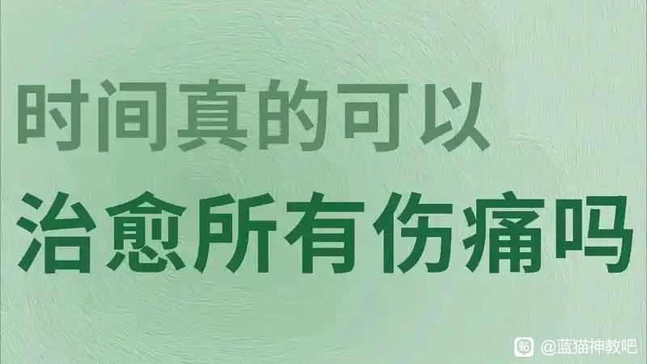

我们总在受伤后听见一句安慰：“没事，时间会治愈一切。”于是我们抱着期待往前走，以为某一天回头看，那些撕心裂肺的难过、求而不得的遗憾、深入骨髓的委屈，都会被岁月轻轻抹平。可走着走着才发现，有些伤口看似结痂，一碰还是会疼；有些人明明淡出了生活，想起时心里依旧空了一块。于是我们开始怀疑：时间到底是治愈者，还是只是让我们学会了忍着痛生活？
�时间从来不是神奇的药膏，它不会主动抹去伤痛，更不会让发生过的事情消失。那些让你深夜痛哭的经历，那些刻在记忆里的伤害，不会因为日子一天天过去，就凭空消散。失去的人不会回来，做错的事无法重来，受过的委屈也不会凭空变成释怀。时间只是一条不停向前的河，它不负责打捞你的难过，只负责推着你往前走，哪怕你满心抗拒，也不得不跟着时光的脚步，继续面对三餐四季，面对生活的琐碎与奔波。
�所谓的“治愈”，不过是时间给了我们距离，让我们站在更远的地方，重新看待曾经的伤痛。年少时觉得天塌下来的大事，时隔多年再看，或许只是人生里的一道小坎；曾经以为熬不过去的低谷，回头看时，才发现自己早已踩着那些艰难，走到了光亮里。不是伤痛变轻了，而是我们长大了，眼界宽了，内心的承受力，也在时光里慢慢变强了。就像小时候摔一跤会嚎啕大哭，成年后即便摔得遍体鳞伤，也能拍拍灰尘站起来，不是不疼，而是我们懂得了，生活还要继续。
�而更多时候，我们以为的治愈，其实是习惯了疼痛。那些没有被真正化解的情绪，没有被好好告别的遗憾，没有被抚平的委屈，并没有消失，而是藏进了心底最深处，变成了一种隐性的痛。就像一根扎进肉里的刺，没有被拔出来，只是被皮肤慢慢包裹，平日里不会刻意察觉，可一旦触碰到相似的场景、相似的话语，尖锐的疼就会瞬间袭来。我们学会了在难过时强装微笑，学会了在深夜独自消化情绪，学会了对伤痛闭口不谈，不是不疼了，而是我们知道，喊疼也无用，只能把痛揉进日常，变成生活的一部分。
�我们习惯了带着遗憾前行，习惯了在某个瞬间突然沉默，习惯了把最柔软的伤口藏起来，不让人看见。这种习惯，是时光赋予我们的铠甲，也是我们与生活和解的方式。我们不再执着于追问“为什么是我”，不再纠结于“如果当初”，不是原谅了所有伤害，而是明白了，纠结过往，只会困住现在；抱着伤痛，只会错过未来。时间让我们明白，人生本就是一边失去，一边拥有，一边受伤，一边前行。
�真正的治愈，从来不是忘记，不是不痛，而是与疼痛和平共处。是即便心里有疤，也能坦然面对；是即便经历过黑暗，也依然愿意相信光亮；是想起曾经的伤痛，不再有怨恨，不再有不甘，只是轻轻叹一口气，然后继续往前走。时间没有治好我们的伤，它只是让我们学会了，带着伤也能好好生活；它没有抚平所有的痛，只是让我们懂得，痛也是人生的一部分，接纳它，放下它，才能轻装前行。
�我们终其一生，都在与自己的情绪和解，与过往的经历和解。时间不是治愈一切的良药，它只是一个容器，装着我们的眼泪与成长，装着我们的遗憾与坚强。而真正能治愈我们的，从来不是时间本身，而是时间里，慢慢学会释怀、学会坚强、学会与自己相处的自己。
�那些以为过不去的坎，终究会在岁月里慢慢沉淀；那些忘不掉的人和事，终究会在时光里慢慢淡然。不是不痛了，而是我们不再让痛定义自己；不是治愈了，而是我们学会了在痛里开出花来，在时光里，活成更从容、更强大的模样。
�这便是时间最好的意义：它不治愈伤痛，却让我们在伤痛中，长成了能扛住风雨的人。